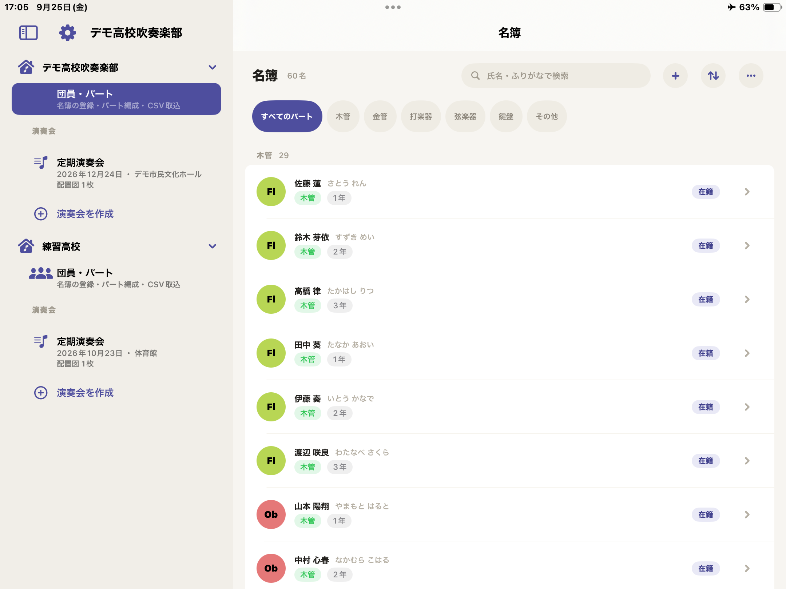
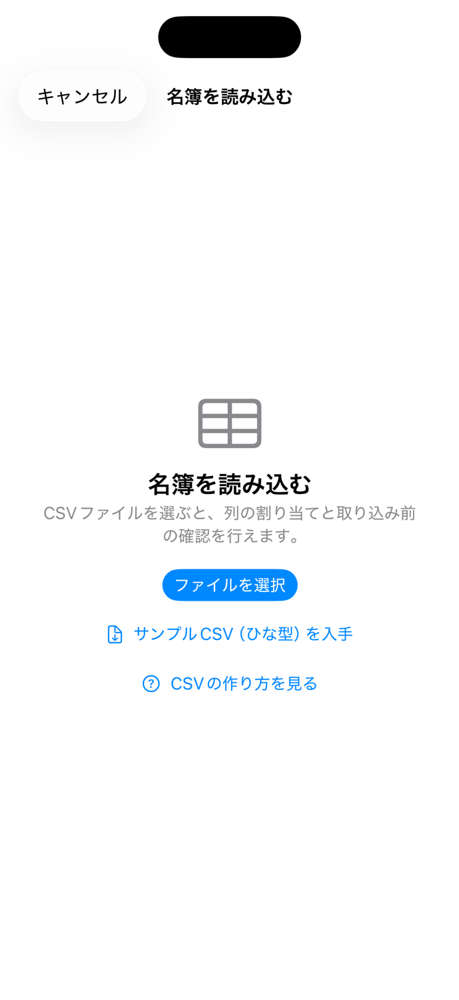
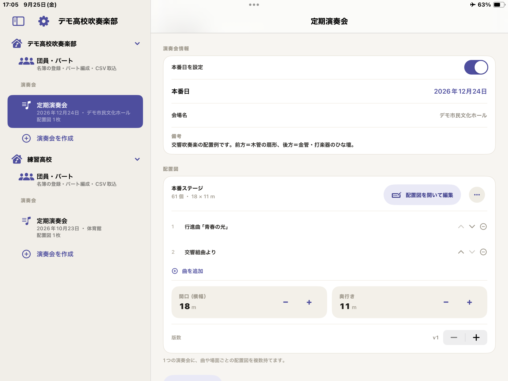
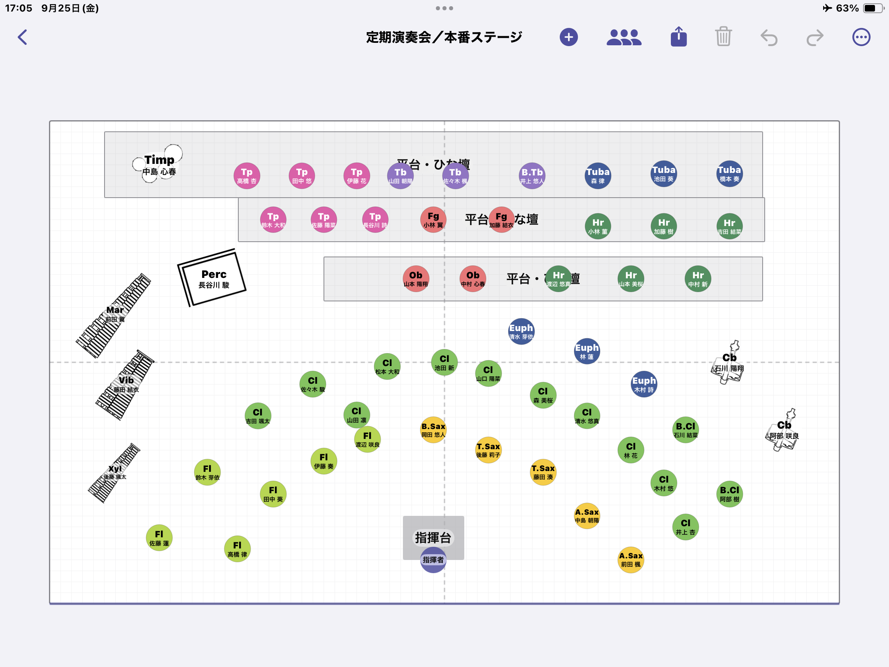

使い方・サポート Support & User Guide
団員登録から配置図の出力までの流れを説明します。右上のボタンで英語／日本語を切り替えられます。 This guide walks through the app from roster to exported seating chart. Use the buttons at the top right to switch between English and 日本語.
5 つの手順（全体の流れ）The five steps
- 団員を登録する（手入力または CSV）。
- 演奏会を作り、舞台（配置図）を用意する。
- パートを選んで自動配置する。
- ドラッグ・整列で位置を調整する。
- PDF・画像として出力・共有する。
- Register your members (by hand or from CSV).
- Create a performance and add a stage layout.
- Select a section and auto-place it.
- Fine-tune positions by dragging and aligning.
- Export and share as PDF or an image.
1. 団体と団員名簿1. Organizations & roster
最初に団体（学校・楽団）を作ります。団体の追加は 設定 → 団体 から行えます。団体を作ると、名簿と演奏会が使えるようになります。
団員を追加する
名簿画面右上の「＋」で 1 人ずつ追加できます。氏名・ふりがな・学年・主担当楽器・持ち替え楽器・在籍状態・備考を登録できます。
パートは主担当楽器から自動で決まります。たとえば「トランペット」を選べば金管に、「クラリネット」を選べば木管に分類されます。パートを手で指定する必要はありません。
並べ替え・グループ表示・検索
- 系統別（木管・金管・打楽器…）／学年別にまとめて表示できます。
- 席順・ふりがな・氏名・学年で並べ替えられます（設定は端末に記憶されます）。
- 検索フィールドで氏名・ふりがなを絞り込めます。キーボードはフィールド右の「完了」で閉じられます。
- 行内でパート色のアバター・学年・在籍を素早く変更できます。

Start by creating an organization (a school or ensemble) from Settings → Organizations. Once it exists, the roster and performances become available.
Adding members
Use the “+” at the top of the roster to add members one by one: name, phonetic reading, school year, primary instrument, doubling instruments, active status and notes.
The part (section) is derived automatically from the primary instrument — pick “Trumpet” and the member is filed under Brass, pick “Clarinet” and under Woodwinds. You never set the part by hand.
Sorting, grouping & search
- Group by family (woodwind, brass, percussion…) or by school year.
- Sort by chair order, phonetic reading, name or year (remembered on the device).
- Filter by name in the search field; dismiss the keyboard with the “Done” button above it.
- Change the instrument avatar, year and active status inline in each row.
2. CSV で名簿を取り込む2. Importing a roster from CSV
名簿をまとめて登録したいときは CSV が便利です。名簿画面の「…」→「CSV を読み込む」、または団員がいないときの案内から取り込めます。ひな型は下のボタンから入手できます。
列の構成
次の列を用意します。「パート」の列は不要です（主担当楽器から自動で判定します）。列の順番は自由で、取り込み時に各列の意味を割り当てられます。
| 列 | 必須 | 内容 |
|---|---|---|
| 氏名 | 必須 | 例：佐藤 陽向 |
| ふりがな | 任意 | 並べ替え・検索に使用 |
| 学年 | 任意 | 半角数字（例：1・2・3） |
| 主担当楽器 | 推奨 | 例：クラリネット。ここからパートが決まります |
| 持ち替え楽器 | 任意 | 複数ある場合は「・」や「/」で区切る |
| 備考 | 任意 | 自由記入 |
楽器名について
楽器名は日本語の標準名（フルート、クラリネット、トランペット など）で書くのが確実です。Cl や Trumpet のような略称・英名も可能な範囲で自動変換しますが、取り込み前の確認画面で「原文 → 変換候補」を必ず確認できます。標準楽器に一致しなかった場合も原文は備考へ残ります。
ファイルの作り方（Excel / Numbers / Google スプレッドシート）
- 上のひな型をダウンロードして開きます。
- 1 行目の見出しはそのままに、2 行目以降へ団員を入力します。
- そのまま 「CSV（コンマ区切り）」 形式で保存します。区切りはコンマ（,）です。
- アプリで「CSV を読み込む」→ ファイルを選択 → 列の割り当て → 内容を確認 → 取り込み、の順に進めます。
ひな型の中身（先頭の数行）
氏名,ふりがな,学年,主担当楽器,持ち替え楽器,備考 佐藤 陽向,さとう ひなた,3,フルート,ピッコロ,パートリーダー 鈴木 葵,すずき あおい,3,クラリネット,, 高橋 蓮,たかはし れん,2,オーボエ,イングリッシュホルン,

CSV is the fastest way to register many members. Open it from the roster’s “…” menu → “Import CSV”, or from the empty-roster prompt. Download the template below.
Download the roster template CSV
Columns
Prepare the following columns. You do not need a “part” column — the part is inferred from the primary instrument. Column order is free; you map each column during import.
| Column | Required | Notes |
|---|---|---|
| Name | Required | e.g. Hinata Sato |
| Phonetic | Optional | Used for sorting / search |
| School year | Optional | A number (1, 2, 3…) |
| Primary instrument | Recommended | e.g. Clarinet — this sets the part |
| Doubling instruments | Optional | Separate multiples with “·” or “/” |
| Notes | Optional | Free text |
Instrument names
Standard names are the most reliable. Common abbreviations and English names (e.g. Cl, Trumpet) are normalized where possible, and the confirmation screen always shows “original → suggested” so nothing is changed silently. Unrecognized text is preserved in the member’s notes.
Preparing the file (Excel / Numbers / Google Sheets)
- Download and open the template above.
- Keep the header row; enter members from the second row onward.
- Save as CSV (Comma delimited). The separator is a comma.
- In the app: Import CSV → pick the file → map columns → review → import.
Template contents (first rows)
Name,Phonetic,Year,Primary,Doubling,Notes Hinata Sato,,3,Flute,Piccolo,Section leader Aoi Suzuki,,3,Clarinet,, Ren Takahashi,,2,Oboe,English Horn,
3. 演奏会と配置図3. Performances & layouts
演奏会を作成し、日付・会場・曲名を登録します。1 つの演奏会に複数の配置図（曲や場面で変わるもの）を持てます。
- 「配置図を追加」で名称と舞台（会場プリセット）を選んで作成します。追加した配置図はその場で一覧に表示されます。
- 舞台の間口・奥行きはカードの ＋／− で調整できます。
- 各配置図には曲名を演奏順で登録でき、版数（v1, v2…）も持てます。

Create a performance and set its date, venue and pieces. A single performance can hold several layouts (for different pieces or scene changes).
- “Add layout” lets you name it and pick a stage (venue preset). New layouts appear in the list immediately.
- Adjust stage width and depth with the +/− controls on the card.
- Each layout keeps its pieces in performance order and a version number (v1, v2…).
4. 舞台の編集4. Editing the stage
置く・選ぶ・動かす
- 「追加」から団員（人＋担当楽器）を舞台へ置きます。ピアノ・マリンバなどの大型楽器は設備としても単体で置けます。
- すでに配置済みの団員は追加候補から自動的に除外され、重複しません。
- オブジェクトは押した瞬間に選択され、そのままドラッグで移動します。指の位置に追従します。
- 2 本指でキャンバスを移動、ピンチで拡大・縮小、空白のダブルタップで全体表示に戻ります。
自動配置
パート（と、その中の特定メンバー）を選び、直線／円弧・列数・人数・間隔・向きを指定して一括配置します。確定前にプレビューで確認できます。
整える
- 回転ハンドルで自由角度に回せます（設置型オブジェクトはインスペクタの 90° 回転も可）。
- 複数選択して整列・等間隔配置ができます。
- グリッド・中央線・近接オブジェクトへスナップします。舞台の縦横中央には十字のガイド線が出ます。
- 譜面台は長押しでその場コピーできます（同じ譜面台を素早く増やせます）。
- 取り消し（Undo）・やり直し（Redo）に対応します。

警告（助言）
舞台外のオブジェクト、大きすぎる重なり、団員未割当の席、同じ団員の重複割当を助言として表示します。安全を保証するものではありません。
Place, select, move
- Use “Add” to place members (person + instrument). Large instruments such as piano or marimba can also be placed on their own as equipment.
- Members already on stage are excluded from the add list, so nobody is placed twice.
- An object is selected the moment you touch it and moves with your finger as you drag.
- Pan with two fingers, pinch to zoom, double-tap empty space to fit the whole stage.
Auto-placement
Choose a section (and specific members within it), then set line/arc, number of rows, count, spacing and facing to place everyone at once. A preview is shown before you commit.
Tidying up
- Rotate freely with the rotation handle (structural objects also offer a 90° rotate in the inspector).
- Select multiple objects to align and distribute them evenly.
- Snap to the grid, the center lines and nearby objects. A cross guide marks the stage center (both axes).
- Long-press a music stand to duplicate it in place — a quick way to add more of the same stand.
- Undo and redo are supported.
Warnings (advisory)
The app flags objects off the stage, excessive overlaps, seats without an assigned member, and the same member assigned twice. These are advisory only and are not a safety guarantee.
5. 出力・共有5. Export & sharing
- 出力は画面のスクリーンショットではなく、モデル座標から生成します。選択枠やガイドは含まれません。
- PDF・PNG・JPEG に対応し、A4 横が既定です。用紙サイズを選べます。
- 氏名を表示する出力／しない出力を選べます（ホール提出などで個人名を出したくない場合に）。
- iOS 標準の共有シートから印刷・保存・共有できます。
- Exports are generated from model coordinates, not a screenshot — selection frames and guides are never included.
- PDF, PNG and JPEG are supported; A4 landscape is the default, and you can choose the page size.
- Choose with-names or without-names output (useful when you must not show personal names).
- Print, save or share through the standard iOS share sheet.
6. 設定6. Settings
- 楽器の管理：標準に無い楽器を追加でき、色・略称・椅子/譜面台の要否を編集できます。
- デモ用の団体を表示：お試し用の吹奏楽団を表示／非表示にできます（自分で作った団体には影響しません）。
- 団員配置時に譜面台も置く：奏者を置くときに譜面台（×型）も一緒に置くかを切り替えます。
- ヘルプ：このサポートページとプライバシーポリシーを開けます。
- Manage instruments: add instruments not in the catalog and edit color, abbreviation and chair/stand requirements.
- Show demo data: show or hide a demo band (your own organizations are untouched).
- Add a stand with each performer: whether an “×” music stand is placed together with a seated player.
- Help: opens this support page and the privacy policy.
よくある質問FAQ
追加した配置図が演奏会に出てきません。
最新版では追加直後に一覧へ表示されます。表示されない場合はアプリを最新へ更新してください。
CSV にパート列は要りますか？
不要です。主担当楽器からパートを自動判定します。
個人名を出さずに配置図を配れますか？
できます。出力時に「氏名を表示しない」を選んでください。
データはどこに保存されますか？
この段階のアプリは端末内にのみ保存し、外部へ送信しません。詳しくはプライバシーポリシーをご覧ください。
A layout I added doesn’t show up in the performance.
In the current version it appears immediately after you add it. If it doesn’t, please update to the latest version.
Does the CSV need a “part” column?
No. The part is inferred from the primary instrument.
Can I share a chart without personal names?
Yes — choose “without names” when exporting.
Where is my data stored?
At this stage the app stores everything on your device and sends nothing externally. See the privacy policy for details.
お問い合わせContact
不具合の報告やご要望は support@margheritaworks.com までお寄せください。端末（iPad / iPhone）と iOS のバージョン、再現手順を書いていただけると助かります。
For bug reports and requests, email support@margheritaworks.com. Please include your device (iPad / iPhone), iOS version and steps to reproduce.